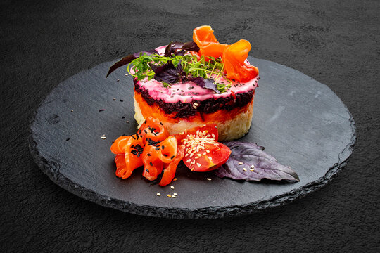

Shuba Salad

Recipe
Ingredients
- 3 herring fillets
- 2 medium Yukon potatoes, cooked and peeled
- 2 medium carrots, cooked and peeled
- 4 kosher dill pickles, grated
- 3 medium beets, cooked and peeled
- 1 boiled egg
- 18 tbsp mayonnaise
- 1 tsp distilled white vinegar
- 1 tsp finely grated onion
- ground black pepper to taste
- fresh dill for garnish
Steps
- Cook the vegetables: leave vegetables unpeeled.
- In a medium pot, place 2 medium Yukon potatoes and 2 medium carrots. Cover with cold water, bring to a boil over medium-high heat. Reduce the heat to low and cook carrots for 15-20 minutes (take out with kitchen tongs or couple forks). Continue cooking potatoes for 10 additional minutes, until they can be easily pierced with knife.
- Into a small pot, place 3 medium beets and cover with water. Bring to a boil and cook for 45-60 minutes until they can easily be pierced with a knife.
- Drain water and let the vegetables stand at room temperature to cool before peeling or refrigerate for faster cooling. Peel vegetables once cooled.
- Boil 1 egg.
- Take 3 herring fillets from the package and place onto a plate lined with paper towel. Pat herring with paper towel to remove excess oil.
- Cube herring into 1/4” cubes. Into a dinner plate, spread herring in circle in the center of the plate, pressing gently down with a fork. Drizzle with 1 tsp of white distilled vinegar and 1 tsp finely grated onion.
- Using a cheese grater, finely grate 2 potatoes evenly over the herring and gently press down with a fork. With a dull knife, spread 3 tablespoons mayo over potatoes.
- Using same cheese grater, finely grate 2 medium carrots over the salad, press down with fork and cover with 3 tablespoons mayo.
- Into the sieve, grate 4 kosher dill pickles, squeeze out the juice and spread evenly over carrots. Cover with 4 tablespoons mayo.
- Into a sieve, grate 3 medium beets onto a big hole of grater. Squeeze out the juice from grated beets and evenly spread beets over the salad. Cover with 8 tbsp mayo or enough to completely cover all the beets.
- Separate 1 boiled egg – you need egg yolk. Using grater, top with finely grated 1 egg yolk and sprinkle with ground black pepper. (Be sure not to squeeze egg yolk when grating). Refrigerate shuba salad for at least 4 hours before serving.
- This salad is good refrigerated for 3-4 days. Top with fresh parsley before serving.